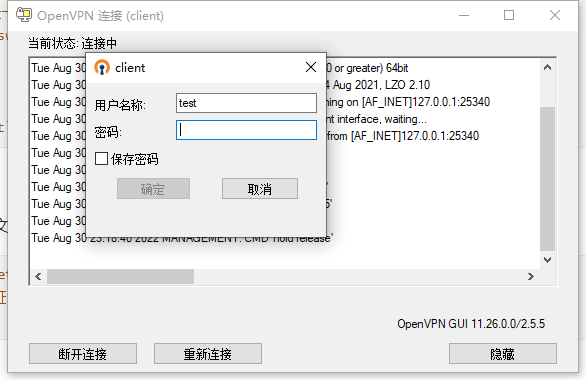

centos7部署openvpn
cenos7 openvpn部署
[TOC]
一、环境准备
openvpn 服务端 centos7
IP 192.168.1.99
test-server 192.168.1.250
关闭SElinux
关闭防火墙
二、安装
1.epel源配置
这里我采用的是阿里云
https://developer.aliyun.com/mirror/epel?spm=a2c6h.13651102.0.0.3b0f1b116S0OUX
1 | |
2.openvpn安装
1 | |
二.准备证书相关文件
2.1安装easy-rsa
1 | |
2.2 easyrsa脚本帮助
1 | |
2.3初始化PKI生成PKI相关目录和文件
1 | |
2.4创建CA机构环境
1 | |
2.5创建服务端证书
1 | |
2.6颁发服务端证书
1 | |
2.7创建Diffie-Hellman密钥
1 | |
2.8准备客户端证书环境
1 | |
2.9颁发客户端证书
1 | |
2.10将CA和服务器证书相关文件复制到服务器对应的目录
1 | |
2.11将客户端私钥与证书相关文件复制到服务器相关的目录
1 | |
三、准备OpenVPN服务器配置文件
1 | |
三、启动OpenVPN
1.启动openvpn服务
1 | |
2.准备openvpn客户端配置文件
1 | |
四、实现 OpenVPN 客户端
1.Windows 配置部署 OpenVPN 客户端
下载地址：Community Downloads | OpenVPN

openvpn客户端安装过程：


安装完成后会提示没有读取配置文件，这是正常的

1.1Windows 客户端配置准备
客户端默认安装路径：C:\Program Files\OpenVPN\config，将刚刚压缩的文件解压到该目录下


双击打开，然后在在状态栏显示以下图标,右键点连接


1.2Windows 客户端验证通信


1.3验证OpenVPN服务器连接状态
1 | |
五、实现访问VPN服务器的内网主机
5.1OpenVPN服务器打开 ip_forward功能
1 | |
5.2配置实现内网服务器回应外网的请求的路由
5.2.1在内网每个主机上添加路由
1 | |
5.2.2在OpenVPN服务器配置 iptables 规则
1 | |
VPN基本就搭建完成了！
六、拓展资料，根据需求配置
1.如何给客户端指定配置，比如不同的客户端不同的ip地址、推送不同路由等
先在server.conf中指定 client-config-dir目录，能够让openvpn访问的到
1 | |
1.2通过脚本颁发证书
1 | |
1.3实现用户密码认证
1.3.1修改服务端配置
1 | |
1.3.2创建自定义脚本
1 | |
1.3.3创建用户密码文件
1 | |
1.3.4修改客户端配置
修改客户端配置文件client.ovpn文件，增加下面一行,使其支持用户名/密码与服务器进行身份验证.
1 | |

本博客所有文章除特别声明外，均采用 CC BY-SA 4.0 协议 ，转载请注明出处！